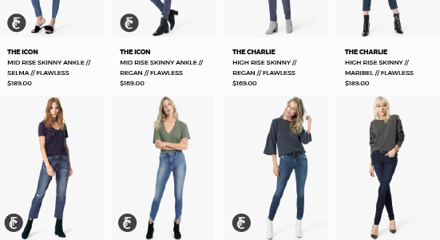
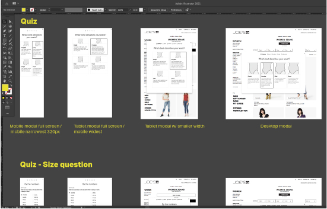
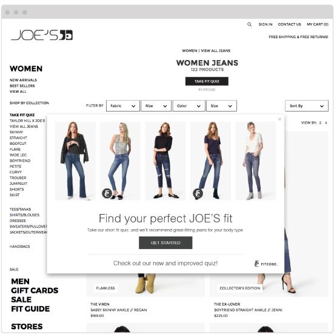
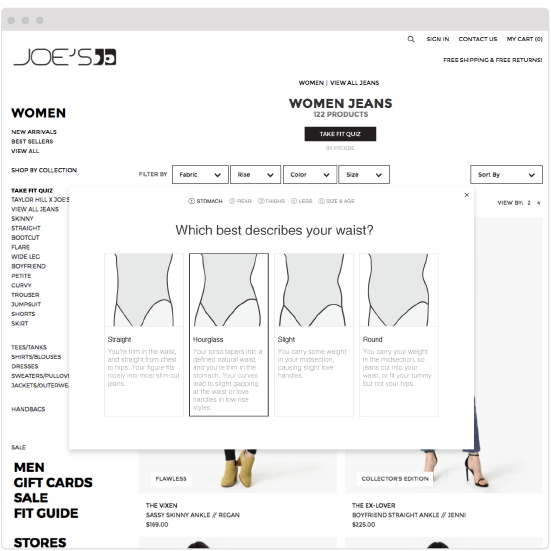
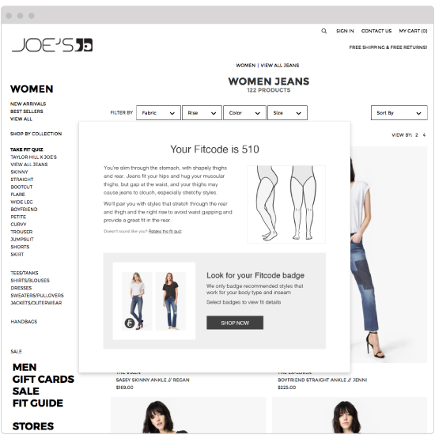
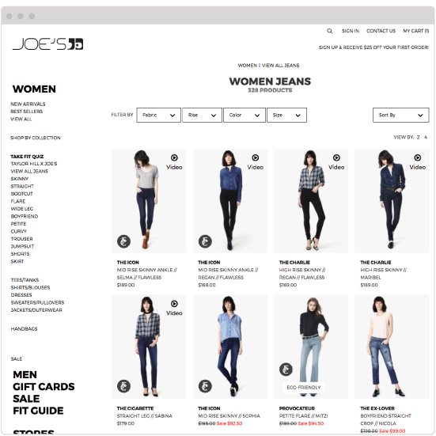

Fitcode Partner Integration
Dec 2014 - Aug 2018
Role: UX/UI designer, Front-End Developer

At Fitcode our goal was to help people find a better fit in jeans when they shopped online. We measured and fit tested the inventory of a select list of jeans brands, provided a fit quiz to users, and recommended jeans that would flatter their figure type as they browsed the site. The first few iterations of this technology were not meeting our business needs though and we had to do a design overhaul to make a product that would work for a more partner based business model.
Problem
At the time we had a good proof of concept when you visited the Fitcode website, but we needed a way to bring Fitcode to shoppers. We needed a product that our business team could sell, and would perform for our partners, bringing measurable benefits to their business.
Process
Early on the product team worked with the business team to determine what set of features would be acceptable for a minimum viable product. From that information I explored the architecture of the product, and did a few user flows to flesh out how it was going to work. Though these assets weren’t referenced very often by the team, I worked on them anyway because they allowed me to memorize each feature and state of the Partner Badge, allowing me to speak to any structural issue or change during meetings and team conversations.

Architecture map for the Partner Badge
User flow for the most common user story, "I would like to buy a pair of jeans that fit."
I would also explore other topics of interest like how a user’s size would effect what recommendations they see, how our integrated experience would interact with a partner’s existing sizing tools, and what areas of the site were best to place our invitation to take the quiz.

Example of some of the graphics I would create to communicate with the team about scenarios that need to be thought through.
Working from designs I had done previously, I reorganized my files to account for each state in each screen size breakpoint in the partner’s site. I also used time saving techniques like symbols and linked files for repeating elements. This way I could stay on top of each design detail and change without wasting time wrestling with my design tools.
Having organized and labeled design files was key to keeping track of each UI detail for each state, screen size, and parter brand.
After reviewing drafts of my designs with the product team, the final designs were organized into a presentation ready PDF that we would review with the partner stakeholders.
Example of a partner UX deck.
When we got signoff from both our team and the partner I would work with the dev team to implement my designs in code. I would pitch in with the CSS work, organizing styles for type, buttons, colors, and layouts so the build matched my designs. I also worked on image optimization, using .svg assets where ever I could and making sure each visual element was as lightweight as possible. When I worked with the dev team I was expected to commit my work in Git and coordinate with the team lead whenever my branch was ready to merge with the master branch.
7. I also coordinated a lot of the QA efforts related to the front end. Checking the experience on a small library of devices, and scheduling a “bug bash” with the team just before launch. I also advocated for feature bugs that I felt would affect the user’s experience of our product, but may have been aside in the past. I kept track of feature bugs in a separate backlog on our scrum board, and periodically combed through it with the team so see what the team would be willing to address when we had time.
8. Post launch I would maintain my design files and iterate as needs from the partners came up, or as new features were launched.
9. When a new partner would come on board I would create a new design file to make changes specific to their brand and website layout. And a new separate iteration would be built by the development team. As we worked we would need to maintain sperate yet integrated versions of the partner badge, some parts being specific to the partner’s site and some parts being universal design changes.
10. I would make sure that the latest design of each partner’s badge experience was captured in a PPT style PDF that was easy to share with the fitcode team and our partners alike. Making it easy to use as a reliable resource for accuracy.
Results
As we worked we captured some really positive user data that showed how much Fitcode was helping to steer shoppers towards styles that would fit them better.
Find some good stats on how the partner badge performed against a regular partner experience.
- Fitcode boost sales by 200%
- and repeat business by 300%
- Decreased returns by 58%
Though Fitcode ended up disbanding our plan for the next iteration of the partner experience was to have a boutique page on our partners site that would show the shopper only styles that would fit their figure.
Fitcode quiz intro modal
Fitcode quiz question modal
Fitcode quiz complete modal
Shopping experience with Fitcode badge
Fitcode quiz intro modal
Fitcode quiz question modal